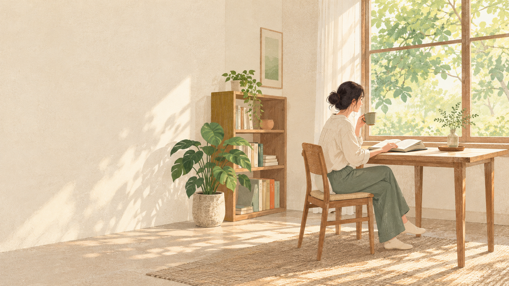
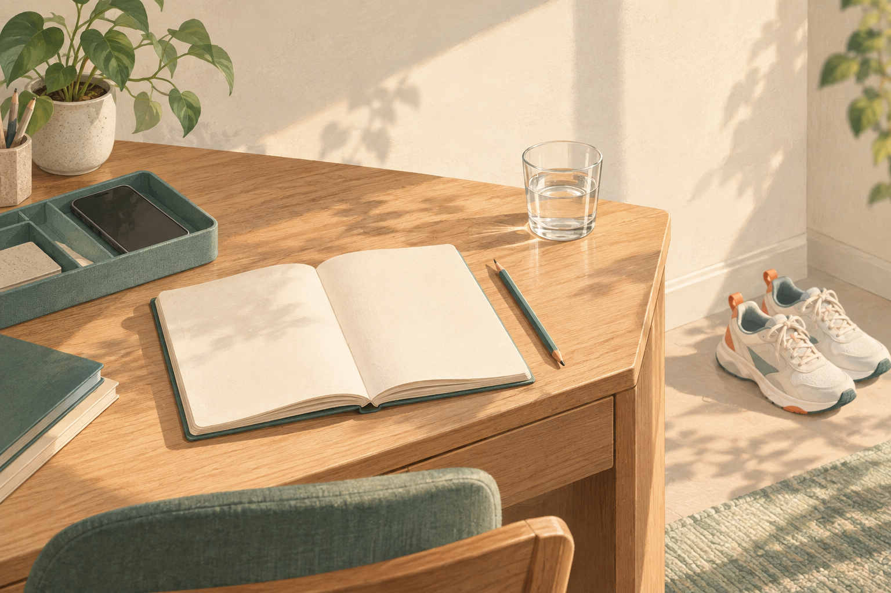

用一天，
重启
你的生活
How to fix your entire life in 1 day
1带走三份行动成果
现状清单
看清时间和精力的去向，写下最想改变的三个现状。
90 天目标
选出一个重点，明确结果、完成标准和截止日期。
7 天行动表
把改变放进日程，知道每天做什么、何时做。
- 01看清现状
- 02明确取舍
- 03设计行动
- 04开始执行
今天不是把所有事情做完，
而是决定接下来怎么过。
从看清现状，到明确取舍，再把改变落实到日程。
3- 01看清现状
- 02明确取舍
- 03设计行动
- 04开始执行
看清现状
看见时间、精力与生活的真实去向
- 01
- 02
- 03
- 04
- 01看清现状
- 02明确取舍
- 03设计行动
- 04开始执行
你的时间和精力去了哪里
时间花在哪里
翻看日历与使用记录：哪些事情占用了最多时间？
记录三项主要活动和大致时长。
精力被什么消耗
哪些事让你疲惫？哪些事让你恢复状态？
各记录三项消耗与补充精力的事。
- 01看清现状
- 02明确取舍
- 03设计行动
- 04开始执行
从四个领域看见生活
健康
睡眠、饮食、运动和身体状态，最近怎样？
工作与财务
工作节奏、收入与支出，哪些让你不满意？
关系
与家人、朋友、伴侣的相处，是否如你所愿？
个人成长
学习、兴趣与能力积累，是否还有空间？
- 01看清现状
- 02明确取舍
- 03设计行动
- 04开始执行
写下三个不满意的现状
列出三个现状
从四个领域中，选出最让你不满意的三件事。
各写一个事实
用发生过的事或数字说明，不只写感受。
检查是否具体
读一遍：别人能否看懂你到底想改变什么？
- 01看清现状
- 02明确取舍
- 03设计行动
- 04开始执行
如果未来一年
什么都不改变，
你的生活会走向哪里？
看看刚写下的三个现状，写出继续下去最可能的结果。
8- 01看清现状
- 02明确取舍
- 03设计行动
- 04开始执行
明确取舍
找到真正值得改变的一件事
- 01
- 02
- 03
- 04
- 01看清现状
- 02明确取舍
- 03设计行动
- 04开始执行
分清想要与应该想要
- 01看清现状
- 02明确取舍
- 03设计行动
- 04开始执行
描绘一个理想的普通日
在哪里
你在哪里醒来、工作和休息？周围是什么样？
做什么
一天的时间怎样分配？哪些事情值得持续做？
和谁相处
你想与谁见面、合作或共度时间？

- 01看清现状
- 02明确取舍
- 03设计行动
- 04开始执行
只选一个优先改变
回看全部问题
把三个不满意的现状与理想普通日放在一起。
判断带动作用
改变哪一项，最能带动其他方面改善？
圈出一个重点
本轮只选一项，作为未来90天的主目标。
- 01看清现状
- 02明确取舍
- 03设计行动
- 04开始执行
把愿望写成明确目标
结果
90天后，你希望看到什么具体变化？
完成标准
用什么数字、行为或交付物判断完成？
截止日期
把90天后的具体日期写下来。
- 01看清现状
- 02明确取舍
- 03设计行动
- 04开始执行
设计行动
让行动不再依赖意志力
- 01
- 02
- 03
- 04
- 01看清现状
- 02明确取舍
- 03设计行动
- 04开始执行
把目标拆成明天第一步
90 天结果
抄下已经确定的目标与完成标准。
本周里程碑
未来七天，先完成哪一项看得见的进展？
明天第一步
用一个具体动作，写清楚从哪里开始。
- 01看清现状
- 02明确取舍
- 03设计行动
- 04开始执行
把第一步缩小到能开始
- 01看清现状
- 02明确取舍
- 03设计行动
- 04开始执行
让环境支持你的行动
减少一个阻力
把要用的材料、工具或衣物提前准备好。
移除一个干扰
行动时，把最容易分心的东西移出视线。
设置一个提醒
在日历或固定场景里，放一个开始信号。

- 01看清现状
- 02明确取舍
- 03设计行动
- 04开始执行
有时间，也有备用方案
- 01看清现状
- 02明确取舍
- 03设计行动
- 04开始执行
开始执行
用一天完成规划，用七天开始改变
- 01
- 02
- 03
- 04
- 01看清现状
- 02明确取舍
- 03设计行动
- 04开始执行
用一天完成生活重启
- 上午
盘点现状
产出回看一周，完成现状清单
- 中午
明确方向
产出选出重点，写下90天目标
- 下午
设计行动
产出拆出第一步，填好7天行动表
- 晚上
完成第一步
产出做一个最小动作，留下完成记录
- 01看清现状
- 02明确取舍
- 03设计行动
- 04开始执行
排好未来7 天行动
| 日期 | 第1天 | 第2天 | 第3天 | 第4天 | 第5天 | 第6天 | 第7天 |
|---|---|---|---|---|---|---|---|
| 做什么 | ____ | ____ | ____ | ____ | ____ | ____ | ____ |
| 何时做 | ____ | ____ | ____ | ____ | ____ | ____ | ____ |
| 完成标准 | ____ | ____ | ____ | ____ | ____ | ____ | ____ |
- 01看清现状
- 02明确取舍
- 03设计行动
- 04开始执行
用复盘调整下一周
完成了什么
对照7天行动表，列出实际完成的动作和结果。
卡在哪里
找出没完成的具体环节：时间、难度还是干扰？
下周调整什么
保留有效安排，改动一个最影响执行的地方。
- 01看清现状
- 02明确取舍
- 03设计行动
- 04开始执行
谢谢观看
23